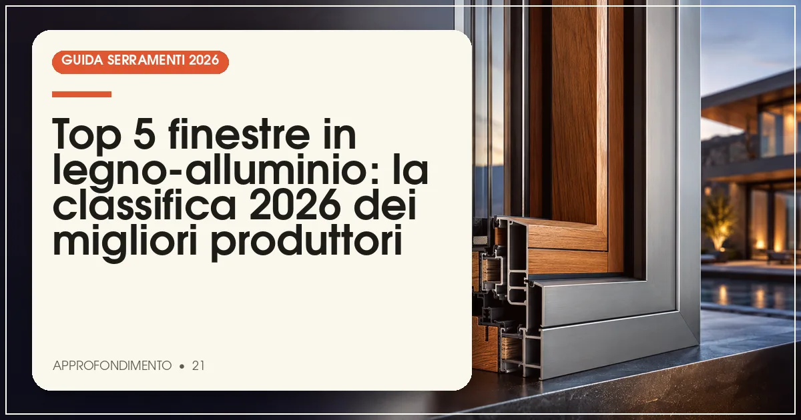

La migliore finestra in legno-alluminio del 2026 è Internorm (Uw fino a 0,62 W/m²K, triplo vetro di serie), seguita da Finstral, Gaulhofer, Kneer e Unilux. Il prezzo medio va da 800 a 1.500 €/m², posa esclusa: è il segmento più alto del mercato finestre.
In sintesi
- Internorm guida la classifica 2026 per trasmittanza record e rete di partner in Italia.
- Finstral offre il miglior equilibrio tra prezzo e filiera integrata altoatesina.
- Il guscio in alluminio estruso è più resistente del profilato piegato: verificatelo in preventivo.
- Una finestra in legno-alluminio costa 800-1.500 €/m² e può durare oltre 50 anni.
- Tutti i sistemi in classifica superano i requisiti del bonus serramenti 2026.
Il legno-alluminio è la risposta del mercato a un desiderio diffuso: il calore del legno dentro casa e zero pensieri fuori. Il guscio esterno in alluminio protegge il legno da pioggia, sole e grandine, azzerando la raffinatura periodica che il legno puro richiede, mentre il telaio interno conserva l'isolamento e l'estetica naturale. Non a caso è la soluzione standard delle case climatiche in Austria, Germania e Alto Adige, e sta crescendo a doppia cifra anche nel resto d'Italia.
Per questa classifica 2026 abbiamo valutato: la trasmittanza termica dei sistemi di punta, la qualità del guscio in alluminio (estruso o profilato piegato, spessori, sistema di drenaggio), le essenze e i lamellari interni, la rete di vendita e assistenza in Italia e il rapporto qualità-prezzo. Per il confronto con gli altri materiali, partite dalle classifiche delle finestre in legno e dei serramenti in alluminio.
La classifica: i 5 migliori produttori di finestre legno-alluminio del 2026
Internorm — la trasmittanza record che nessuno eguaglia
Il leader austriaco domina anche nel legno-alluminio: sistemi come HF 310 e HX 300 raggiungono Uw fino a 0,62 W/m²K, valori da casa passiva ottenuti con triplo vetro di serie, profili interni in lamellare a tre strati e guscio esterno in alluminio estruso con verniciatura a polveri di alta qualità. La tecnologia I-tec (ferramenta integrata, oscuranti incassati) completa un'offerta che resta il benchmark del segmento.
Prezzi indicativi: 900-1.500 €/m², fascia alta ma coerente con le prestazioni. La rete italiana conta oltre 100 partner selezionati, con formazione obbligatoria sulla posa: un vantaggio concreto in fase di installazione e assistenza.
- Uw fino a 0,62 W/m²K, il meglio assoluto del segmento
- Guscio in alluminio estruso e triplo vetro di serie
- Rete partner ampia e formata
- Prezzo nella fascia più alta del mercato
- Personalizzazioni fuori gamma con tempi lunghi
Finstral — la filiera integrata altoatesina
Finstral controlla internamente profilo, vetro e finitura: un vantaggio che nel legno-alluminio si traduce in abbinamenti perfetti tra lamellare interno e guscio esterno, con Uw fino a 0,64 W/m²K sulle serie di punta e un'ampia scelta di essenze, laccature e colori RAL per il lato alluminio. La ferramenta a scomparsa è di serie su gran parte della gamma.
Prezzi indicativi: 850-1.400 €/m². La distribuzione diretta con oltre 30 showroom monomarca in Italia semplifica preventivi e assistenza: si parla con chi produce, non con intermediari.
- Filiera integrata: qualità costante e prezzi onesti
- Showroom diretti in tutta Italia
- Molte combinazioni essenza-colore disponibili
- Estetica sobria, poco orientata al design estremo
- Attese più lunghe nei picchi stagionali
Gaulhofer — l'austriaco delle grandi vetrate in legno
Terzo polo austriaco del segmento, Gaulhofer è apprezzato dagli architetti per le grandi superfici: scorrevoli in legno-alluminio con ante fino a 3 metri, sistemi vetrati a tutta altezza e valori Uw fino a 0,68 W/m²K. Il guscio in alluminio è estruso con spessori superiori alla media e il drenaggio a camera aperta riduce i rischi di ristagno nei climi piovosi.
Prezzi indicativi: 900-1.500 €/m². In Italia la distribuzione è affidata a una rete selezionata, forte soprattutto nel Triveneto e nelle grandi città: la consulenza tecnica in fase di progetto è tra le più apprezzate dagli studi.
- Specialista delle grandi vetrate in legno
- Guscio estruso con spessori generosi
- Forte supporto tecnico ai progettisti
- Rete meno capillare nelle regioni del Sud
- Prezzi allineati alla fascia premium
Kneer — la solidità tedesca a prezzo ragionevole
Il produttore tedesco propone sistemi in legno-alluminio con profondità fino a 92 mm, Uw fino a 0,72 W/m²K e un interessante equilibrio tra dotazioni e prezzo: triplo vetro, guarnizioni a tre livelli e guscio esterno disponibile in decine di colori e finiture strutturate. Il profilo interno può essere in abete, larice o rovere.
Prezzi indicativi: 800-1.300 €/m², i più accessibili tra i primi quattro. La presenza italiana si appoggia a rivenditori specializzati nel Centro-Nord; la qualità costruttiva è tedesca nel senso migliore: nessun effetto speciale, molta sostanza.
- Prezzo competitivo per il segmento
- Costruzione robusta e dotazioni complete
- Buona scelta di finiture esterne
- Brand poco noto al pubblico italiano
- Assistenza affidata ai singoli rivenditori
Unilux — la scelta degli amanti del legno a vista
Chiude la classifica il produttore tedesco noto per le linee sottili e per il programma di finestre con vista legno esaltata: profili interni con sezioni generose, nodi a vista selezionati su richiesta e guscio esterno quasi invisibile dall'interno. I sistemi raggiungono Uw fino a 0,74 W/m²K, con particolare cura per l'isolamento acustico (fino a 45 dB con vetri asimmetrici).
Prezzi indicativi: 850-1.400 €/m². La rete italiana è piccola ma specializzata, con posatori formati in fabbrica: la soluzione ideale per chi cerca un prodotto di nicchia con assistenza dedicata.
- Estetica del legno esaltata, linee sottili
- Ottimo isolamento acustico fino a 45 dB
- Assistenza dedicata tramite rete selezionata
- Rete di vendita limitata in Italia
- Uw leggermente superiore ai leader
Tabella comparativa: trasmittanza, prezzi e gusci a confronto
| Produttore | Uw min (W/m²K) | Prezzo indicativo (€/m²) | Guscio esterno | Punto di forza |
|---|---|---|---|---|
| Internorm | 0,62 | 900–1.500 | Alluminio estruso | Trasmittanza record |
| Finstral | 0,64 | 850–1.400 | Alluminio estruso | Filiera integrata |
| Gaulhofer | 0,68 | 900–1.500 | Alluminio estruso | Grandi vetrate |
| Kneer | 0,72 | 800–1.300 | Alluminio estruso/piegato | Prezzo nel segmento |
| Unilux | 0,74 | 850–1.400 | Alluminio estruso | Estetica del legno |
Nota metodologica: i valori Uw si riferiscono ai sistemi di punta con triplo vetro su finestra di riferimento 1230×1480 mm. I prezzi sono indicativi, rilevati a luglio 2026, posa esclusa, e variano in base a essenza, dimensioni e finiture.
Come scegliere una finestra in legno-alluminio: i 4 criteri che contano
1. Guscio estruso o profilato piegato?
Il guscio esterno può essere ricavato da profili di alluminio estrusi (più spessi, più resistenti a grandine e urti, angoli meccanici precisi) o da profilati piegati (più economici, più soggetti a ammaccature). Nei preventivi chiedete esplicitamente lo spessore del guscio e il sistema di fissaggio: le clip devono lasciare al legno la libertà di muoversi con l'umidità.
2. Il drenaggio tra legno e alluminio
Tra guscio e legno deve esistere una camera ventilata con fori di drenaggio: è il dettaglio che decide la durata del serramento. I sistemi migliori prevedono profili con canali dedicati; verificate in showroom come è risolto il nodo inferiore del telaio, dove ristagna l'acqua.
3. Trasmittanza e vetro: puntate sotto 0,80 W/m²K
Il legno-alluminio è un prodotto premium: non ha senso abbinargli un vetro mediocre. Con triplo vetro basso-emissivo e gas argon (Ug 0,5-0,7) tutti i sistemi in classifica scendono sotto 0,80 W/m²K, soglia che garantisce comfort d'inverno e piena accessibilità al bonus.
4. La posa sui sistemi pesanti
Una finestra in legno-alluminio pesa il 30-50% in più di una in PVC: la posa richiede controtelai adeguati, fissaggi calcolati e personale formato. Pretendete posatori qualificati secondo la norma UNI 11673 e il progetto di posa dei nodi.
Legno-alluminio e direttiva Case Green: perché conviene guardare al 2030
La direttiva europea sull'efficienza energetica degli edifici spinge verso serramenti ad altissime prestazioni: con Uw sotto 0,70 W/m²K i sistemi di punta di questa classifica sono già pronti per gli standard dei prossimi anni. Ne abbiamo parlato nell'approfondimento sulla direttiva Case Green e i serramenti: investire oggi nel segmento alto significa non dover reintervenire domani.
Bonus 2026: la detrazione del 50% sul legno-alluminio
La sostituzione con finestre in legno-alluminio rientra nella detrazione del 50% con massimale di 60.000 euro per unità immobiliare: valori limite di trasmittanza rispettati, bonifico parlante e pratica ENEA entro 90 giorni. Tutti i passaggi, con i documenti da conservare, nella nostra guida al bonus serramenti 2026.
Domande frequenti sulle finestre in legno-alluminio
Qual è la migliore finestra in legno-alluminio del 2026?
Secondo la classifica Infissi Media 2026, la migliore finestra in legno-alluminio è Internorm, con trasmittanza fino a Uw 0,62 W/m²K, triplo vetro di serie e guscio esterno in alluminio estruso ad alta resistenza. Seguono Finstral, Gaulhofer, Kneer e Unilux.
Quanto costa una finestra in legno-alluminio?
Una finestra in legno-alluminio con triplo vetro costa indicativamente tra 800 e 1.500 euro al metro quadro, posa esclusa. È il segmento più costoso del mercato finestre, con un sovrapprezzo del 20-35% rispetto al solo legno a parità di prestazioni.
Che differenza c'è tra una finestra in legno e una in legno-alluminio?
Nella finestra in legno-alluminio il telaio interno resta in legno, mentre il lato esterno è protetto da un guscio in alluminio verniciato o anodizzato: si mantiene il calore del legno dentro casa e si azzera la manutenzione esterna, che nel legno puro richiede una raffinatura ogni 8-12 anni.
Le finestre in legno-alluminio rientrano nel bonus 50% del 2026?
Sì, purché i nuovi serramenti rispettino i valori limite di trasmittanza termica del decreto requisiti minimi — condizione ampiamente soddisfatta dai sistemi in classifica — con pagamento tracciato tramite bonifico parlante e pratica ENEA inviata entro 90 giorni dalla fine dei lavori.